Page 1 / 原始页码 423
第 21 章 进化的证据
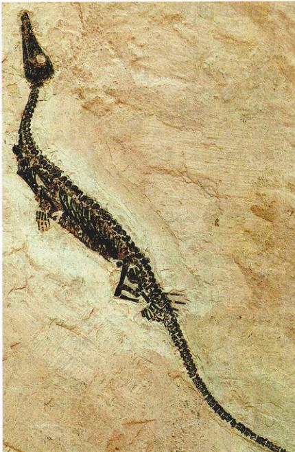
图 21.1 一扇通向远古的窗户 这是一副现今已经灭绝的爬行动物中龙 (Mesosaurus) 的化石残骸。在非洲和南美洲的二叠纪岩层中都可以找到这种动物的化石，说明这两块大陆早先是联系在一起的。中龙是一种淡水动物，显然不可能穿越大西洋。因此，它必然是生活在远古毗邻大陆的湖泊和河流中的，这块大陆在白垩纪的时候分裂成了今天的非洲大陆和南美洲大陆。
在所有主要的生物学思想中，今天的生物起源于那些已经灭绝的祖先（图 21.1）这一理论也许最为一般公众所熟知的。这不是因为一般人真正懂得进化的基本事实，而是因为很多人错误地认为这一说法代表了对宗教信仰的一种挑战。公众关于进化的大量批评意见甚至从达尔文时代起就开始了。因为这一原因，在你学习生物的过程中，弄清这个问题是很重要的：什么是进化的证据。
Page 2 / 原始页码 424
21.1 化石证据表明进化已经发生了
这一章的中心内容是进化基于两个支柱：第一，人工选择证明选择可以产生进化；第二，化石记录证明进化确实发生过。另外，许多不同生物学领域的数据——包括像胚胎学、解剖学、分子生物学和生物地理学（一门研究物种进化分布的学问）——都只能用进化的结果作出合理解释。
21.1.1 化石记录
关于进化发生过的最直接证据就是化石记录。较之达尔文时代，今天的我们对化石的认识要完整得多。化石是保存下来的曾经生活过的生物的遗体。化石的产生需要经过以下3个步骤：首先，生物体必须被埋藏在沉积物中；其次，骨骼中的钙或者硬组织矿化；最后，周围的沉淀物最终硬化为岩石。这一形成化石的过程是很罕见的，通常，动物或植物在这一过程来临之前就会腐烂或被吃掉。另外在很多岩石中的化石是科学家无法找到的，即使它们变得可以利用，通常也会在被收集到之前遭到了侵蚀或者是其他自然过程的损害，结果是曾经存在的物种中只有一小部分（有人估计为5亿）通过化石被人们了解。虽然如此，这些已经发现的化石仍足以提供关于历史上进化过程的详细信息。
1) 测定化石的年代
通过确定化石出现的岩层年代，我们可以精确地知道化石的年代。在沉积岩中，化石的年龄由它们之间的相对位置确定（相对年代），较深地质层中的岩石年龄也较大。通过了解沉积岩的位置关系和在不同环境中不同沉积岩的侵蚀速度，19世纪地质学家们精确地确定了岩石的相对年龄。
今天，测定岩石年龄是通过检测岩石中所含放射性核素含量的多少（绝对年代）。岩石的年龄越大，放射性衰变就越厉害。因为放射性核素衰变速度不因为温度或压力而改变，岩石中的核素就像一架内在的时钟，记录岩石形成的年龄。这是更精确的确测定岩石年龄的方法，能以百万年为单位而不是相对量来表示数据。
2) 进化的历史
把化石按年龄从老到新排列，它们通常显示出连续进化的痕迹。在最大的尺度上，化石记录证明了生命随时间而演化的历程。从真核生物的起源，生命经过鱼类的进化、陆生生物的兴起，恐龙的统治时代一直到人类的出现（图 21.2）。
3) 化石记录的空白
化石记录并不是完整的。化石形成和发现的可能性都很小，因此在化石记录中出现空白并不奇怪。虽然如此，古生物学家（研究化石的科学家）不断地在填补化石记录的空白。达尔文时代的化石记录被许多空白所分隔，就是这样，科学家们仍旧了解了始祖鸟 (Archaeopteryx) 化石是恐龙和鸟类之间的过渡。今天的化石记录远比过去完整，特别是在脊椎动物中，种系所有主要类群的化石都已经找到。近年来，经常可见填补我们认识脊椎动物进化过程中仍存在的空白发现。比如说，最近一种水中的四足哺乳动物化石对鲸和海豚从陆地有蹄祖先而来的进化提供了重要知识（图 21.3）。同样的，一个有腿的蛇化石揭示了蛇的进化历程，它是由蜥蜴逐步伸长身体同时减少四肢直至消失进化来的。
在一个适当的尺度上，某些种类动物的进化细节已经了解得十分详细。比如在2亿年前，牡蛎的贝壳经历了从小而弯到大而平的变化，而这个渐进式的过程已经...
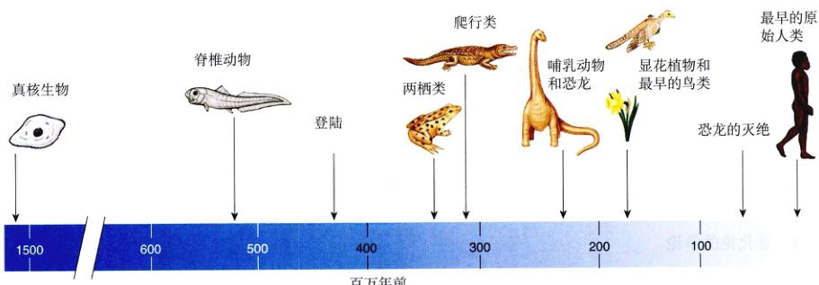
图 21.2 化石记录描绘的生物历史时间表
Page 3 / 原始页码 425
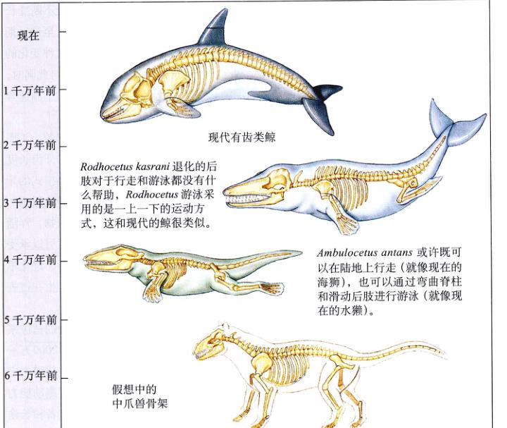
图 21.3 鲸“缺失的环节” 最近发现的走鲸 (Ambulocetus) 和罗德侯鲸 (Rodhocetus) 填补了由中爪兽 (Mesonychid) 进化到现代鲸的路线上的空白。其中中爪兽是假想中联系鲸类和有蹄类动物的共同祖先。
被成功地记录在了其间大约1200万年的化石中了（图 21.4）。其他大量的例子展示了连续变化的记录。这些连续变化的示例是证明进化存在强有力证据之一。
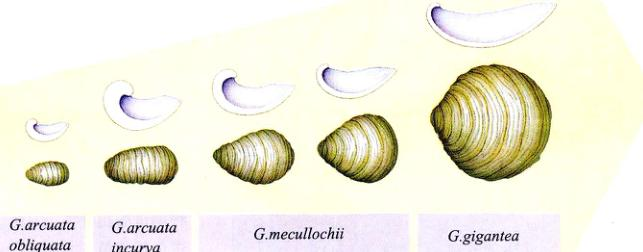
图 21.4 牡蛎贝壳形状的进化 在侏罗纪早期的大约1200万年时间里，这一类螺旋形牡蛎的壳变得越来越大，越来越薄，越来越平。这些动物栖息在海洋底层的一个叫做“生命区”的地方。这可能是因为在这样流流不稳定的海域中，大而平的牡蛎壳更平稳。
21.1.2 马的进化
马的进化是化石记录中研究得最透彻的事例之一。现代马科动物的成员包括马、斑马、驴等，都是高大、长腿、跑得很快的动物，适于生活在开阔的草原上。这些动物在分类上都属于马属 (Equus)，它们是从大约5500万年前的始新世开始进化并产生了34个属的一系列祖先中分出的一支。经过对化石的调查研究，人们发现这是一个非常典型的例子，说明进化是如何通过适应不断变化的环境而发生的。
1) 最早的马
目前所知最早的马家族的成员，始祖马 (Hyracotherium) 属的种类，与今天的马根本不相像。这种动物个...
Page 4 / 原始页码 426
子很小，腿很短，足很宽大（图 21.5）。它们生活在树林中，以树叶和草本植物为食，利用复杂的林被空间来躲避捕食者。从这种小型的动物进化到今天的马，发生了很多方面的改变，包括：
(1) 大小：最早的马实际跟狗差不多大小，甚至更小一些。与之相比，现代马的体重可以达到半吨。对化石记录的研究发现，最初的3000万年中马的大小只发生了微小的改变，但从那之后起，很多不同的家系开始大量而迅速的增长。尽管如此，体型减小的趋势也出现在马进化树的一些分支中（图 21.6）。
(2) 脚趾的退化：现代马的脚只有一个脚趾，被包在坚硬而骨质的蹄中。相反，始祖马的前足有4个脚趾，而后足有3个脚趾，这些脚趾被包在肉质的足垫而不是像现代马那样的蹄中。通过对化石记录的研究，我们可以清楚地看到随着时间的推移，马的中间脚趾不断变长并产生骨质的蹄；而其他脚趾不断地退化，直至最后彻底消失（图 21.7）。和身体大小的变化一样，这种变化的趋势同时出现在马进化树的许多不同分支上。与此同时，马四肢的长度和骨骼结构也在进化，使得马适于高速奔跑很长的距离。
(3) 牙齿的大小和形状：始祖马的牙齿比较小，而且形状也比较单一。但随着时间的推移，马的牙齿长度迅速增长，而且在臼齿和前臼齿上形成了复杂模式的牙脊（图 21.7）。这些变化的效果使得马可以更好地咀嚼一些粗糙坚硬的食物，如草这种非常磨损牙齿的植物。伴随着牙的变化，颅骨的形状也发生了变化，从而可以承受不断咀嚼食物产生的压力。和身体的变化相似，进化不是匀速发生的，相反，牙齿形状的变化大多发生在过去的2000万年中。
所有这些变化都可以用对全球气候变化的适应来解释。具体来说，在晚中新世和早渐新世（大约2000万~2500万年以前），草原在北美大陆扩展，马的进化随之出现了。马适应了它们的栖息地，长距离高速奔跑能力对它们而言十分重要，这有助于它们躲避捕食者和长途跋涉。而多脚趾和短腿这种性状产生变异，在复杂的丛林植物之间穿梭时是优点，但在草原上就不再有很大的用处了。同时，马的食物——草或其他植物常常夹杂着沙粒或其他比较坚硬的物质，因此马的牙齿和颅骨就变得越来越适应这些食物。
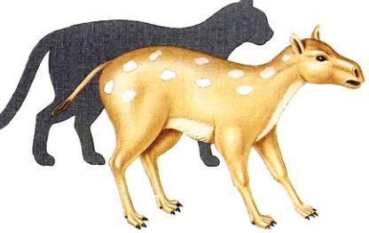
图 21.5 始祖马 (Hyracotherium sandrae) 是一种最早的马，大小和今天的家猫差不多。
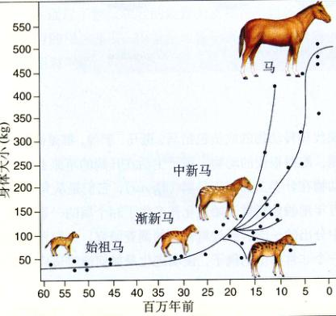
图 21.6 马身体大小的进化过程 线条大致勾勒出了各种物种的进化关系。虽然大多数变化趋向于身体的增大，一些身体减小的变化也发生了。
2) 进化趋势
很多年以来，马的进化都被作为一个很典型的持续进化的例子。我们甚至可以从马进化的记录中发现一种前进的指导性“力量”，这种“力量”不断地推动马的进化朝着单一方向进行。但现在，我们知道这种观点是一种误导，在数百万年的进化过程远远没有这么简单。
相反的，化石表明，尽管马的某些性状上都有一个明显的总趋势，但历史上的进化却远不是恒定一致的。进化的速度变化很大，很长时间基本没有变化，而某些短时间内容易发生重大变化。而且，当进化发生时，经常会产生马进化树上的很多分支。最后，尽管大的趋势是存在的，但像某些进化支中体积减小这样的例外也不少见。我们从马的进化知识中发现的这种进化模式，在其他很多有大量化石记录的植物和动物中也存在，甚至第23章将要讨论的人的进化也是如此。
3) 马的多样性
马的进化一开始被认为是随时间呈线性进化的，
Page 5 / 原始页码 427
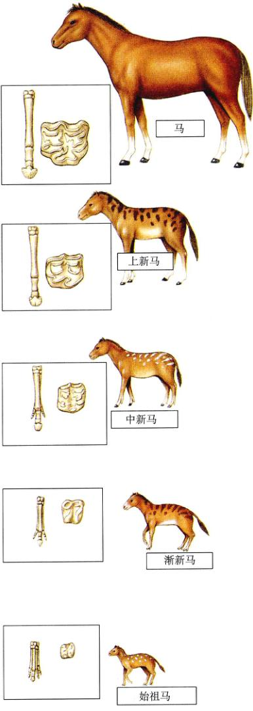
图 21.7 马随时间的进化
大陆就有13种。这些马在身体的大小和其他许多性状上都有差别。推测起来，这些马大概具有不同的栖息地和不同的食性。如果马的这些种类今天还能存在，那么，以前的研究者也许就会对马的进化有一个完全不同的看法，这种情况在研究人的进化过程中也同样出现过。
21.2 自然选择可以产生进化
我们在第20章中已经看到，很多过程都能引起进化。然而，绝大多数的进化生物学家都同意达尔文的观点：历史上出现的绝大部分进化都是由自然选择过程造成的。虽然我们不能穿越时空，但现代的很多证据也可以证明自然选择的力量是无处不在的。这些证据既可以从野外或实验室得到，也可以通过自然或人为改变环境得到。
21.2.1 达尔文雀的喙
达尔文雀 (Darwin's finch) 是一个经典的由于自然选择造成进化的例子。1835年达尔文在加拉帕戈斯群岛（位于厄瓜多尔西海岸）的3个岛上收集了31个雀鸟标本。达尔文不是一个鸟类专家，无法鉴别这些鸟类，但通过检查这些鸟的喙，他认为它的样本中包含鹪鹩 (wren)、“粗喙”和山乌类。从图 21.8 可以看到达尔文画的其中4种鸟的草图。
1) 喙的重要性
达尔文回到英国之后，鸟类学家 John Gould 检查了这些雀。Gould 发现达尔文实际上是收集了一群亲缘关系非常相近的不同种类，除了喙以外它们在其他的方面基本一致。一句话，它们是13个种。图 21.8 中生活在地上的那两个喙较大的雀是用它们巨大的喙把种子碾碎取食的，而另外两种喙较小的则以昆虫为食。有一种雀是吃水果的，一种是吃仙人掌的，还有一种外号叫“吸血鬼”，能攀到海鸟身上用长长的喙去啄海鸟的血。然而更值得注意的是一些能使用工具的雀，啄木鸟雀可以拾起一个小细枝、仙人掌的刺或叶柄，用喙修剪好这些工具的形状，然后用这些工具捕插进树干中把挖出幼虫。
这13种雀的喙与它们相应的食物来源一一对应，使达尔文猜想是进化造成了这一切。
“在一群有亲缘关系的小鸟中看到这样的层次和结构...
Page 6 / 原始页码 428
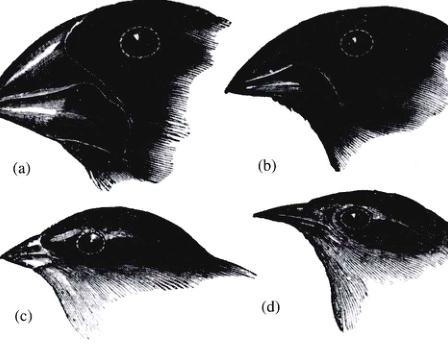
图 21.8 达尔文自画的加拉帕戈斯雀 摘自达尔文的《研究日记》：(a) 大地雀 (Geospiza magnirostris); (b) 中地雀 (Geospiza fortis); (c) 小树雀 (Camarbynchus); (d) 鸣雀 (Certhidea olivacea)。
多样性，人们可能设想：从海岛上当初很少的鸟开始，逐渐形成新种并为了不同的目的而变化。”
2) 达尔文错了吗
达尔文认为是一种原始雀不断进化出了现在各种雀不同的喙。如果这种观点是正确的，那我们理应看到不同种类的雀会扮演其独特的角色，如，4种都用已的喙获取一种特定的食物。比如，那4种啄碾碎种子的雀类应该是以不同的种子为食的，最大的喙理应处理最坚硬的种子。
在达尔文之后，很多生物学家也到加拉帕戈斯群岛进行考察，但直到100年后才有人做了一个关键的实验来验证达尔文的假设。伟大的自然学家 David Lack 在1938年开始做这个实验并花了一个多月仔细观察雀之后，得到的观察结果却与达尔文的假设相矛盾！Lack 经常可以看到很多不同种的雀以同一种种子为食，他的数据表明喙粗壮的雀与喙较细的雀以相同种子为食。
现在我们知道，这种情况是因为 Lack 不幸选择了在食物丰富的湿季进行研究。这时候雀的喙对它们取食没有太大的重要性，因为小型种子是如此丰富，足够所有雀食用。后来在一个贫瘠干旱季节的工作展现了大大不相同的景象，这时可食的种子很少，生存与饿死的决定因素就在于能否有效地获得足够的食物。在这种情况下，对特定食物专用的喙就十分重要了，于是不同种类的雀在食性上开始分化，每一种都适应于一种特定的食物。
3) 细致地观察
成功检验达尔文的假设——加拉帕戈斯雀的喙是适应于不同的食源的关键最终被证明是耐心。自1973年开始，普林斯顿大学的 Peter Grant 和 Rosemary Grant 带着他们的学生来到了位于加拉帕戈斯群岛中央的 Daphne Major 岛，仔细研究了生活在地上的中地雀 (Geospiza fortis)。这种雀靠啄以小而嫩的种子为食，这种种子只在有雨季节才会大量产生。在漫长而干旱的旱季，植物产生的种子很少，这种小种子消耗尽了，这时，这种雀才会转向以大而干并且难于碾碎的种子为食。
Grant 夫妇通过仔细测量数每只雀的喙的深度（即从喙顶端到基部的宽度）量化了喙的形状。通过每年测量大量的雀，他们第一次整理出了对进化起作用的喙的细节图像。他们发现，喙的深度规律性地逐年变化。在旱季，植物只产生很少量的种子，所有可食的小种子很快被吃完了，只留下大个的种子作为鸟上的主要食物来源。结果，喙比较大的雀就更容易存活下来，因为它们可以比较容易地嚼碎这些大型种子。因此，下一年中地雀的喙的平均深度就会增加，只有当雨季到来的时候，喙的平均深度才会下降（图 21.9）。
喙尺寸的变化能否反映自然选择的效应呢？另一种可能的解释是：喙的深度变化并不是因为基因频率的改变，只是对食物改变的反应——例如，因为在食物贫瘠的季节里鸟都不够营养不良，因此它们长出了粗硬的喙。为排除这种可能性，Grant 夫妇比较了父代和子代喙大小的关系。经过多年对雀的观察，他们发现不论环境如何，喙的深度都会忠实地从一代遗传到下一代，说明喙大小的变化确实反映了基因频率的变化。
4) 达尔文终究是对的
如果喙大小的逐年变化确实反映了基因的改变，而...
Page 7 / 原始页码 429
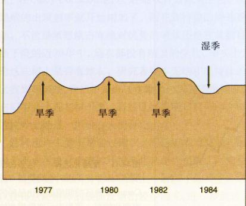
图 21.9 自然选择改变喙大小的证据 在旱季，当只有大型的粗糙种子存在时，喙的平均大小增加。在湿季，当大量小型的种子可食用时，小型的喙就变得比较常见。
目前看起来这是很可能的，且这种变化可以由干旱年份的模式来预测，那么达尔文喙大小最终是对的——自然选择的效果使得喙的大小不断调整以适应于食物。在旱季，喙粗大的雀相对有优势，因为它们可以打开大而干的种子，而这是旱季惟一的食物来源。当潮湿天气回来的时候，小型的种子丰富起来，这时小型喙是迅速捡食大量小型种子的有效工具。
21.2.2 胡椒蛾和工业黑化
当环境改变的时候，自然选择可能就会选择该种的一个新性状。达尔文雀的例子已经明确表明自然变异可以引起进化。人类在很多方面都极大地影响着环境，对生物尝试适应这些新环境提供了很好的例子。胡椒蛾 (Biston betularia) 是一个经典的例子。直到 19 世纪中期，在英国几乎所有这种蛾的翅膀都是浅颜色带黑斑点的（所以称之为胡椒蛾）。从那以后，在工业中心周围的种群中黑翅个体出现的频率越来越高，直到最后各种群中100%的胡椒蛾都成了黑翅的。决定黑翅的是一个显性基因，但在1850年以前这种基因在种群中存在但非常稀少。生物学家们随后注意到在黑翅蛾很常见的工业区，树干都因为烟尘污染而变黑了，这样当蛾在树干上休息时，黑色翅的蛾比浅色翅的蛾更容易隐蔽。而且，工业区空气污染导致树干上很多浅色的地衣死亡，使得树干变得更加黑。
1) 黑化的选择
达尔文的理论能解释黑翅基因出现频率增长的现象吗？为什么从1850年后黑翅蛾在生存上更有优势呢？一个业余的蛾类收集家 J.W. Tutt 提出了后来被广泛接受的解释浅色翅蛾数量下降的假说。他认为浅色翅胡椒蛾在失去地衣而又黑黑的树干上很容易被捕食者发现，结果，鸟类在白天会吃掉在树干上栖息的浅色翅的胡椒蛾。而黑色的个体则刚好相反，在黑色的树干上它们可以很好地伪装，因而具有一定的优势（图 21.10）。尽管 Tutt 开始没有什么证据，但英国生态学家 Bernard Kettlewell 在 1950 年以实验检验了这个假说。他培养了一大批胡椒蛾，
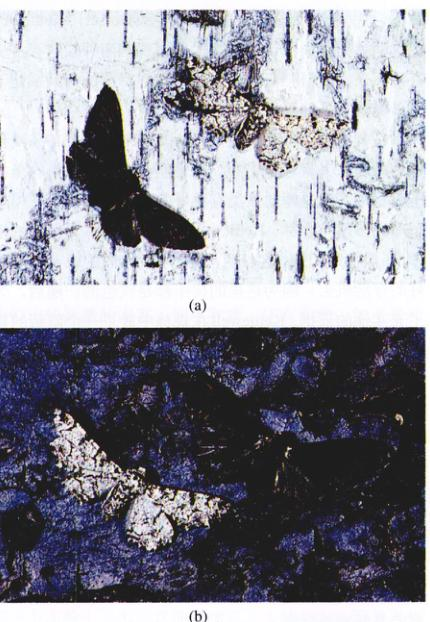
图 21.10 Tutt 解释工业黑化的假说 这些照片向我们展示了不同颜色的胡椒蛾 (Biston betularia)。Tutt 认为，在未污染的树上，黑色的胡椒蛾更容易被捕食者所发现 (a)，而在由于工业污染而变成黑色的树上，颜色浅的胡椒蛾就更容易被捕食者所发现 (b)。
Page 8 / 原始页码 430
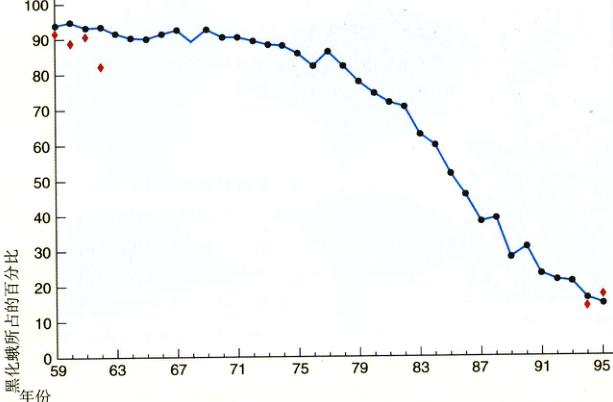
图 21.11 反黑化选择 这条曲线表示了 1959 - 1995 年间英国 Caldy Common 地区的胡椒蛾黑化品种的频率变化情况。菱形表示密歇根州地区 1959 - 1962 年和 1994 - 1995 年的黑化蛾频率。
其中一半是黑色的，一半是浅色翅的。然后，Kettlewell 把这些蛾放到两片树林中，其中一片临近重污染城市伯明翰，而另一片则临近干净的多塞特 (Dorset)。Kettlewell 在这两片树林周围设下了捕捉器来观察两种蛾各有多少存活下来。为了得到正确的结果，他在释放的每只蛾翅下方鸟类看不见处画了一个点作标记。
在邻近伯明翰的污染区，Kettlewell 捕回了 19% 浅色翅的蛾和 40% 黑色翅的蛾。这表明在这片受污染的黑干森林中，黑色翅的蛾类有更好的生存机会。而在相对干净的多塞特森林，Kettlewell 捕回了 12.5% 浅色翅的蛾和 6% 黑色翅的蛾，这表明在这里浅色翅的蛾有一个更好的存活机会，因为这里的树干都是浅色的。随后，为了充实的证据，Kettlewell 在森林中放了一个隐蔽的摄像机以实际观察鸟吃蛾的过程。有时可看到，鸟会像视而不见地从一只和背景颜色相同的蛾身边经过。
2) 工业黑化
工业黑化 (industrial melanism) 是一个术语，用来描述自工业革命以来由于自然选择，黑色的个体比浅色的个体更占优势的进化过程。这一过程广泛发生于很多被烟尘黑化或被其他形式工业污染黑化的生活环境中，因为正如 Kettlewell 的研究结果表明的那样，黑色的个体更容易躲避捕食者。
在欧亚大陆和北美大陆的工业污染区，很多其他种类的蛾也经历了与胡椒蛾相似的变化，从工业化开始的19世纪中期起，黑色的个体越来越多。
3) 反黑化选择
20世纪下半叶，伴随着污染控制的广泛化，黑化过程出现了逆转。反黑化不仅出现在英国很多地区的胡椒蛾上，而且在北半球大陆的许多物种上都出现了这种情况。这是一个由于环境中的特定因素造成的自然选择，而使得种群中等位基因的频率发生改变的例子。
在英国，由于污染而造成的黑化在1956年颁布《空气清洁法》(Clean Air legislation) 后开始逆转。从1959年开始，科学家们每年都从利物浦以外的 Caldy Common 地区采集蛾类 *Biston* 的样本。黑化的比率由 1960 年的 94% 降至了 1994 年的 19% (图 21.11)。在英国的其他许多地方也记录到了类似情况。黑化个体数目的下降与空气污染的好转，特别是二氧化硫和悬浮颗粒的下降是相关的。
有趣的是，在同样的时间同样的情况在北美也发生了。胡椒蛾在北美的工业黑化亚种不像在英国分布的那么广泛，但在底特律附近的一个乡村野外观察站一直记录着其情况。从 1959 年到 1961 年，共捕到 576 只胡椒蛾，其中 515 只只是黑化种，占总数的 89%。1963年美国颁布《空气清洁法》后，空气污染明显下降。在 1994 年，底特律地区的胡椒蛾种群中只有 15% 是黑化品种 (图 21.11)！利物浦和底特律的蛾类作为同样的自然条件实验的一部分，为自然选择提供了强有力的证据。
4) 重新思考自然选择的目标
Tutt 的假设由于 Kettlewell 研究的证实而被广泛的接受，现在正重新评价这个假说。其中一个问题是：最近在这次反黑化选择中并没有显示出与树干上地衣的变化
Page 9 / 原始页码 431
相关。在 Caldy Common 地区，在地衣开始恢复之前，浅色翅蛾出现的频率就开始增加了。而在底特律的野外观察站，不论是黑翅蛾占有绝对优势的时候还是在其数目不断下降的近30年中，地衣都没有明显的改变。事实上，不论这些树上是否有地衣，研究者根本无法在底特律的树上找到胡椒蛾！我们不知道这些蛾白天在哪里栖息，但它们不会出现在树干上。有些证据表明它们可能在树顶的树叶上栖息，但没有人能肯定。
选择也许主要不是通过地衣，而是更多地通过其他由于工业污染而造成的环境变化来起作用的。污染可以使一定环境中的所有物体都蒙上一层微小的灰尘，这足可以使得这些物体的表面反射出较少的光。进一步而言，污染对于表面反射易于反光的树有非常严重的影响。这两项效应使得环境变得比较暗，因此有利于黑翅蛾。
21.2.3 人工选择
从人类文明出现开始，人类就开始选择并驯化动植物。如同自然选择一样，人工选择倾向于具有某个性状表现型的个体，允许这些个体繁殖以把他们的基因遗传至下一代。假如表现型的差异是由遗传因素决定的，那么这种选择将会导致进化，而事实上也的确如此。人工选泽在实验室的实验中、农业上、家畜驯化过程中几乎每一个用实例都能产生有价值的变化，这种成功强有力地证明了选择是进化过程中的一个推动力。
1) 实验室实验
20世纪二三十年代，遗传学作为一门科学迅速兴起，很多学者开始试图用实验验证选择导致了进化这个假设。实验室果蝇是常用的实验动物。遗传学家在果蝇的每一个可考察到的性状（包括身体的大小、眼的颜色、生长速度、寿命及探索行为等）上进行选择实验，得到了一个致的实验结果：对于某种性状的选择导致了明显而且可预测的进化。
在一个经典的实验中，科学家们以果蝇腹部的刚毛（一种很硬，头发样的结构）为对象进行选择实验。在实验开始，种群中个体刚毛的平均数为 9.5。每一代，科学家都挑选种群中刚毛最多的 20% 个体来繁殖下一代。经过 86 代这样的选择，种群中个体刚毛的平均数达到了原来的 4 倍，大约为 40。在另一个相似的实验中，我们同时选择果蝇的刚毛最多和最少的个体，在 35 代后，种群的变异范围就不再重叠了（图 21.12）。
相似的实验也被应用于其他许多实验室动植物。例如，通过选择牙齿具有抗磨性的鼠，科学家可以在不到 20 代之后，将大鼠牙齿的平均磨损时间由约 100 天增加到 500 天左右。
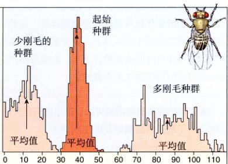
图 21.12 实验室中的人工选择 在这个实验中，从一个果蝇种群中挑选出了刚毛数目过多和过少的个体。我们注意到经过 35 代的选择，不但种群的平均值大小发生了变化，而且两个实验种群的个体刚毛数都在原始种群分布范围之外。
2) 农业
相似的方法在农业生产中已经使用了很个世纪。我们比较熟悉的家畜，如牛和猪，还有作物，如玉米和草莓，都与其野生的祖先截然不同（图 21.13）。这些差异是经过了一代又一代对需要的性状（如牛的产奶量和玉米茎的大小）加以选择而产生的。
一个关于玉米的实验研究证实了人工选择可以迅速地在玉米上产生很大的变化。1896年，农业科学家开始对玉米籽的含油量做人工选择。一开始，玉米籽的含油量只有 4.5%，如同在果蝇的实验中一样，含油量最高的 20% 个体用来繁殖下一代。同时进行的还有一个选择含油量最低个体的平行实验，到第 90 代玉米产生 1986 年，前一个实验中玉米的含油量增长了大约 450%，而与之相对，后一实验中玉米的含油量降到了约 0.5%，这样的低含油量其实是无法准确测量的。
Page 10 / 原始页码 432
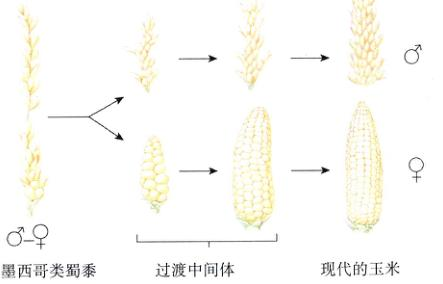
图 21.13 玉米看上去和它的祖先大不相同 如墨西哥类蜀黍这样的野草种和种子进化为现代玉米的雄穗和雌穗。
3) 家畜驯化
人工选择还用于产生猫、狗（图 21.14）、鸽子、牛及其他许多家养动植物，培育品种是为了特殊的目。例如，通过选择最大奔跑能力而产生的灰猎狗 (greyhound)，最终变成了具有长腿和尾巴（后者用作方向舵）、弓背（增加奔跑时每步的距离）及发达肌肉的动物。与之相对，矮脚巴赛特猎狗 (basset hound) 的奇特身体比例，则是为了进入狭窄的洞中追赶野兔或其他小猎物而选择的产物。其他情形里，品种最初的培育目标是其外表，像具有不同颜色和装饰物的鸽子或是各种品种的猫。

图 21.14 狗的品种 这些狗之间的差异要比野生的犬科动物不同种之间的差异还要大。
驯化还能导致对某些性状无意识的选择。近年来，作为驯服银狐的尝试，俄罗斯科学家在每一代银狐中都选出最温顺的个体，让它们继续繁殖。经过了大约 40 年，相当多数的银狐都变得格外温顺，不仅让人抚摸，而且有时会为了引起你的注意而故意悲鸣，甚至还会跟他的主人亲昵。在很多方面，它们已经和家狗没什分另了！但是，它们改变的还不仅仅是行为上，这些银狐开始出现不同颜色模式、松软的耳朵、卷曲而短小的尾巴，腿也变短了。可以推测，决定银狐温顺行为的基因还有其他的（这就是最后一章将要讲到的基因多效性现象）；对银狐温顺性状的选择也导致了其他性状的进化。
4) 选择能够产生大演化吗
既然已经看到了选择在相对较短时间里的效果，很多科学家相信自然选择就是化石记录中出现大变化的原因。一部分进化的批评者同意选择能在一个种内引起进化，但强调这种变化只能在一个相对较小的范围内起作用，并不能引起化石记录中那种巨大的变化。换句话说，自然选择只能改变诸如刚毛数目或果蝇是玉米茎大小之类的性状，但它不能创造一个新种。
持这种观点的人没有注意到人工选择所引起变化的范围。以狗为例，它们在大约1万年前开始由狼驯化而成。假设各种品种的狗都不存在，古生物学家找到了和德国猎犬、灰猎狗、獒、奇瓦瓦狗、波美拉尼亚亚种小狗类似的许多动物化石，毫无疑问它们将被归为不同的种。其实，这些品种之间的差异之大，甚至已经可以被归为不同的属了。事实上，狗的品种所显示的多样性已经远远超出了在犬科其他野生成员——例如山狗、豺、狐狸和狼之间观察到的差异了。因此，说人工选择只能引起非常小的变化这种说法是完全错误的。这种选择的作用时间只要达到1万年以上，就将足以产生本质上的变化；如果作用时间达到数百万年，完全可以产生今天所看到的我们周围的生命多样性。
21.3 在其他生物学领域找到的进化证据
21.3.1 解剖学记录
进化论的力量主要在于它为我们理解生物多样性提供了一个很好的框架。除非生物学很多领域的现象看做是进化的结果，否则无法得到有意义的解释。
Page 11 / 原始页码 433
1) 同源器官
脊椎动物进化过程中，同样的骨骼有时被用于不同用途，这些骨骼在依然可见，它们的存在形式反映了其过去的进化情况。我们把外形和功能不同源自共同祖先同一部分的器官叫做同源器官 (homologous structure)。比如，脊椎动物的前肢就是一种同源器官。从图 21.15 中我们可以看到不同脊椎动物前肢骨骼的形态是多么的不同。为什么这些不同的结构是由同样的骨组成的呢？如果是进化造成的，那这是一个谜了。但如果所有的这些动物都是源自同一祖先的话，那我们就很容易理解是自然选择改变了它们最初的结构，以使之适应于不同的功能。
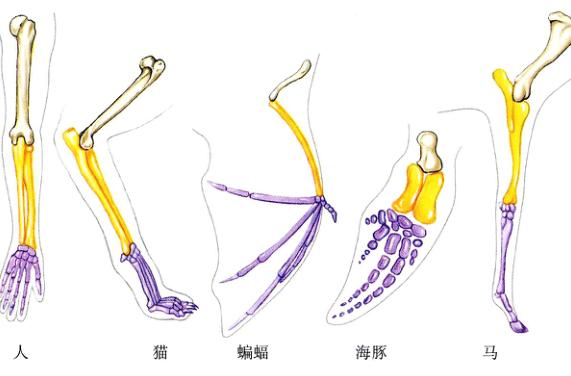
图 21.15 前肢骨的同源性 尽管形式和功能上各不相同，人、猫、蝙蝠、海豚和马的前肢骨都有相似的骨骼结构。
2) 发育
很多支持进化论的解剖学证据都来自对生物发育过程的比较。在很多情况下，由于胚胎展示了其祖先胚胎的特征（图 21.16），因此，一种生物的发育过程可以呈现其进化的历史。例如，在胚胎发育的早期，人会像鱼那样拥有一条很长的骨质尾，而在成人中我们能看到其退化为脊椎末端尾骨的痕迹。人的胎儿在发育到 5 个月左右的时候，身上会出现一层软毛 (胎毛)。这些发育残存的结构说明，我们的发育过程是以新性状来取代祖先旧性状的进化过程。
外表上差别很大的动物有相似的胚胎结构，这一现象间接但十分令人信服地证明了各种生物之间存在进化关系。比如说，人有一套完整的耳肌群，这套肌肉和草原狼的不相上下 (表 21.1)，蟒蛇的括约肌周围有一圈（由手臂进化来的）上有指甲；图 21.17 中是一副须鲸的骨架。从图 21.17 我们可以看到与所其他哺乳动物一样的盆骨，尽管对鲸而言它没有任何已知的功能。人的阑尾就是一个明显的痕迹器官，它是盲肠退化末端的一个封闭的囊，位于大肠的起点。对很多哺乳动物（如鼠类）来说，盲肠是体内消化道最大的部分，其作用为储存——食草动物依然很难把阑尾和任何现在的功能联系在一起。从很多方面来讲，阑尾其实是个危险的器官，它很容易受到感染而发炎，即阑尾炎；这时如果不通过外科手术将之切除，阑尾最终会破裂，这样肠中的物质就会进入体腔，形成潜在的致命威胁。除非当作进化过程中保留下来的痕迹，否则我们很难理解这些痕迹器官的存在。这说明具有这种器官的生物有共同的祖先，不管它们现在变得多么不同。
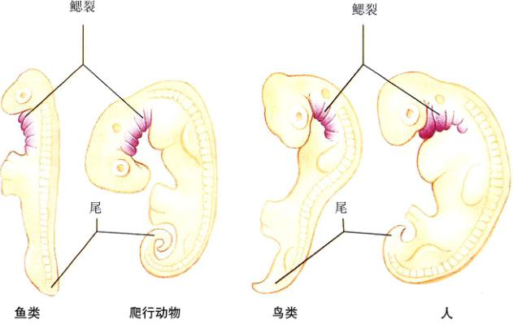
图 21.16 我们的胚胎展示了我们的进化历史 各类脊椎动物在胚胎早期表现出相同的特征，比如鳃裂（紫色部分）和尾。
Page 12 / 原始页码 434
表 21.1 人的一些痕迹器官
| 性 状 |
描 述 |
| 动耳肌 |
在耳周围有3块小肌肉，对一些哺乳动物（比如狗）来说，这些肌肉很重要，可以让它们把耳朵转向声音源。很少有人可以动耳朵，更不用说使他们的耳朵转向声源了。 |
| 尾 |
在人和所有哺乳动物的胚胎中都存在。对于人来说，尾已经退化了。大多数成人只有3~5块很小的尾骨，偶尔还能看到伸尾肌的痕迹。 |
| 阑尾 |
对于我们的某些祖先来说，阑尾可能有一定的消化功能，类似食草动物的盲肠。人类的阑尾长度从 5~15 cm 不等，有些人甚至天生就没有阑尾。 |
| 智齿 |
很少用的臼齿，有时甚至埋藏在下颚骨中。有些人从来就不长智齿。 |
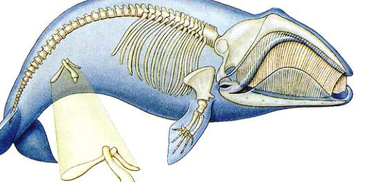
图 21.17 痕迹器官 须鲸是目前地球上最大的一类哺乳动物之一，这是一副须鲸的骨架。可以看到其中有骨盆。这种骨与其他哺乳动物的骨盆骨很相像，但在鲸的骨架中它发育不完全，也没有什么明显的功能。
3) 痕迹器官
很多动物都有痕迹器官 (vestigial structure)，这种器官虽然没有什么明显的用途，但与其祖先的某个结构十分类似。比如，人有一套完整的耳肌群，这套肌肉和草原狼的不相上下 (表 21.1)；蟒蛇的括约肌周围有一圈（由手臂进化来的）上有指甲；图 21.17 中是一副须鲸的骨架。从我们依然很难把阑尾和任何现在的功能联系在一起。从很多方面来讲，阑尾其实是个危险的器官，它很容易受到感染而发炎，即阑尾炎；这时如果不通过外科手术将之切除，阑尾最终会破裂，这样肠中的物质就会进入体腔，形成潜在的致命威胁。除非当作进化过程中保留下来的痕迹，否则我们很难理解这些痕迹器官的存在。这说明具有这种器官的生物有共同的祖先，不管它们现在变得多么不同。
21.3.2 分子记录
进化的痕迹也可以在分子水平上找到。你想想，既然现在的生物是由相对简单的祖先连续进化而来的，那么进化必然要发生在细胞内，发生在 DNA 上。当一个原始生物进化出两个或是更多的物种时，它们的 DNA 一开始大部分都是相同的。但是，当这些生物开始独立进化之后，它们的 DNA 中将会积累越来越多的差异。因此，生物之间的亲缘关系越远，它们的 DNA 就积累有更多的差异；而两种生物之间的关系越紧密，所共有的 DNA 部分就越多。
Page 13 / 原始页码 435
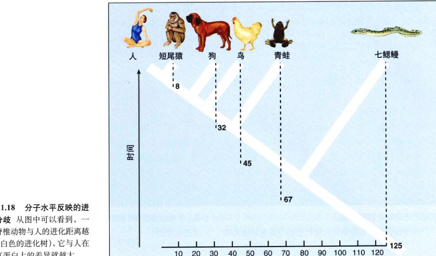
图 21.18 分子水平反映的进化分歧 从图中可以看到，脊椎动物与人的进化距离越远（白色的进化树），它与人在血红蛋白上的差异就越大。
为了检验这个假设，我们需要从 DNA 以外的数据估计生物之间的进化关系（因为如果用 DNA 数据估计进化关系再比较亲缘关系远近不同的生物之间的 DNA——致性，那是一个循环论证）。因此，我们假定的生物进化关系来自化石记录的数据，它可以告诉我们特定物种进化形成的时间。此外，通过检查化石中生物和现在生物的解剖结构，就可以推断它们之间的亲缘关系。
当比较由基因相似性和化石数据得到的进化关系时，我们发现它们吻合得很好。例如，当比较人和其动物的血红蛋白时，我们发现亲缘关系愈近的生物血红蛋白的分子差异就小。黑猩猩、大猩猩、猩猩和恒河猴这些与人有很近亲缘关系的脊椎动物，在由 146 个氨基酸组成的血红蛋白 β 链上与人的差异小于狗与人在这方面的差异。非哺乳动物与人的差异更大，无脊椎动物与其他动物的差异是最大的（图 21.18）。当比较 DNA 时，我们得到相似的结果，例如，应该是 600 万年前同一祖先进化而来的黑猩猩和人，在 DNA 方面的差异就非常的小。
为什么亲缘关系较近生物的 DNA 非常相似？因为 DNA 是产生生物体结构的遗传编码。我们可以想到，两种在外表和结构上相似的生物，如人和黑猩猩，应该比两种没有什相似之处的生物，如人和青蛙，在 DNA 上更为相似。即便没有进化，这个结论也是正确的。然而，在 DNA 中还有很多非编码区（也叫做“垃圾 DNA”），它们没有任何功能，而且看来也没有什么特定的目的。但如果我们比较这些 DNA 链，其结果和比较其他的基因是相同的：亲缘关系越近，DNA 越像。只有在进化的情况下，这种结果才有意义。
21.3.3 趋同进化和趋异进化
同一地理区域生活的动物往往有很大的相似性，虽然这些动物之间可能毫无亲缘关系。我们很难解释这种相似性。而自然选择是倾向于平行的进化，以使不同的物种适应相似的环境。在这种情况下，因为自然选择偏好相同的变化使得不同的种群变得越来越相像，即它们的表现型趋同了。这种进化模式叫做趋同进化 (convergent evolution)，或者平行进化 (parallel evolution)。
1) 有袋动物和有胎盘动物的趋同进化
在最著名的趋同进化例子中，两类哺乳动物——有袋动物和有胎盘动物以相同的方式进化，尽管它们生活在不同的大陆上。在距今大约 5000 万年以前，澳大利亚和其他的大陆分开时，有袋动物已经出现了，哺乳动物中（除了早期的单孔类动物，如鸭嘴兽，和一些移民带来的啮齿类动物）就是有袋动物。有袋动物的幼仔在还未发育成熟的时候就出生了，它们将继续在其母亲的育儿袋中再生活一段时间直到它们可以适应外面的生活。因此，虽然在当今世界上绝大多数地方有胎盘动物都在哺乳动物中有绝对的统治地位，澳大利亚却是由于有袋动物的王国。
这些有袋动物长得像什么呢？它们与现在其他大陆上的胎生动物相似到了令人惊奇的程度（图 21.19）。这两类哺乳动物的某些成员非常相似，只能用趋同进化，即在彼此独立的不同地区因环境相似而有相似的选择压力，从而形成了相似的动物来解释。
Page 14 / 原始页码 436
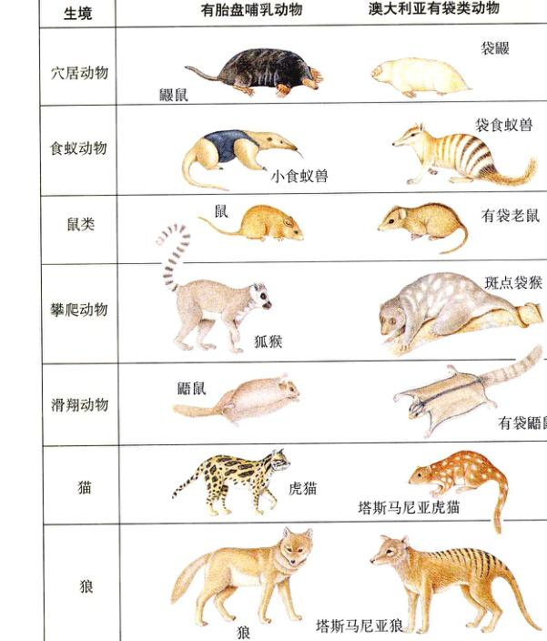
图 21.19 趋同进化 澳大利亚的动物与其他地方的有胎盘动物非常相像。自从澳大利亚与其他的大陆分开之后，它们就开始了独立的进化。
2) 同源和同功
怎样才能判断两个相似的特征是同源的还是同功的。从上面的例子我们已经可以看到，形态不同而适应不同环境的器官可能是同源的 (homologous)，而由于趋同进化而形成的一些同功器官 (analogue) 看上去很像同源的。我们没办法马上回答这个问题，同源器官的鉴定是分类学上最令人头疼的问题。我们比较过不同脊椎动物的胚胎，还比较过蛞蝓和深海中大乌贼的胚胎，在它们的胚胎发育过程中，经常可以发现其成体中不存在的特征。一般地说，两个器官越复杂，就越不可能是各自独立进化来的。
3) 达尔文和最近的趋势模式
达尔文首先证明了在海岛上生存的动植物与临近大陆上的动植物是非常相似的，这种关系只能用它们有共同的祖先来说明。图 21.20 中的加拉帕戈斯斯海龟与南美洲海龟的相似程度就要高于它们与其他大陆上海龟的相似程度，这种关系说明这些海岛种类是由于去过去某个时候从邻近大陆上迁徙来的个体进化来的。然而，图 21.8 中的加拉帕戈斯雀的喙与它们在南美洲的近亲不同。这些海岛上的生物与邻近大陆上的生物非常相像但是还有一定的差异，如果不存在进化，就无法合理解释这种现象。正如达尔文指出的，这种关系为宏观进化——在物种水平上的进化——确实发生提供了有力的证据。
同样，一种独居的岛生雀也与大陆雀非常的相似，只是达尔文没见过这种雀。这种雀生活在加拉帕戈斯群岛东北方 630 公里处一个非常小的火山岛——考克斯岛。这种雀和欧洲、北美、非洲及澳大利亚的雀都不同，只与考克斯岛东面 500 公里外哥斯达黎加的雀很相似。
Page 15 / 原始页码 437
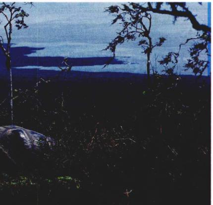
图 21.20 加拉帕戈斯斯海龟与南美的海龟非常相像 加拉帕戈斯斯海龟在这个隔离的遥远小岛进化出了不同的形态。但现在在这个自然条件进行的“实验”已经结束了。从达尔文生活的时代开始，由于人类的侵扰，很多大型岛屿上的自然生境已经被破坏了。例如，定居者带来的山羊极大地改变了岛上的植被。
当然，因为适应不同的生存环境，海岛上的生物和临近大陆上的生物不会完全一样。比如，不同地方生活的海龟龟壳形状就不一样：那些在潮湿环境生存品种的壳是圆形的，而那些在干旱地方生存的龟壳则是比较扁平的鞍形，壳的前端跳起以使头和颈部能伸到外面。同样的，现存的 13 种加拉帕戈斯斯雀是源自同一祖先的，它们各自形成了适应于生活的特点。加拉帕戈斯斯海龟和加拉帕戈斯斯雀与它们邻近大陆共同的祖先开始一起进化，但这种进化是趋异的而不是趋同的。
有人可能会问：达尔文怎么会知道加拉帕戈斯斯海龟和加拉帕戈斯斯雀不是与其他岛屿和大陆上的同类发生趋同进化（同功进化），而是最近分离的群体发生趋异进化（同源进化）？尽管两种假说都证明了自然选择，达尔文选择了更为简单的解释，即这是由于同源动物的趋势进化造成的，因为毕竟这些海龟和雀鸟在几个性状上有差异，大部分还是相似的。
总的来说，宏观进化的证据是不容辩驳的。在第22章中，我们将研究究达尔文的自然选择产生进化这一理论的核心内容：物种内部的小进化将直接导致大进化。
21.4 进化论的争论
21.4.1 对达尔文理论的批评
在达尔文的自然选择进化论提出后的一个多世纪里，生物学家广泛地接受了他的观点，但是对部分普通公众而言，这一理论却有很大争议。达尔文的批评者对进化论提出了 7 条反驳意见。
1) 进化论缺乏坚实的基础
批评者指出，“进化仅仅只是一个理论”，好像理论意味着缺少知识，只是一种猜测。但是，科学家使用的“理论”一词的含义和这些普通公众的理解不同。理论是科学的基石，是我们最肯定的东西。很少有人因为引力理论“仅仅只是一个理论”而怀疑它。
2) 目前没找到过渡生物的化石
批评者宣称，“没有人看见过一个正在变成腿的鳍”。这指的是达尔文时代，化石记录中依然有很多空白。但是，从那时起，绝大多数脊椎动物进化的过渡生物化石已经实实在在地找到了。从蹄动物到鲸，从爬行动物到哺乳动物，从恐龙到鸟，从人猿到人，都可以从化石中找出一条条清晰的进化途径留下的痕迹。主要种类之间进化的化石证据是引人注目的。
Page 16 / 原始页码 438
3) 智慧设计论
“现存生物的器官如此复杂，以至于不可能是随机过程的产物——钟表的存在是钟表匠存在的证据。”生物学家们不同意这个观点。在哺乳动物的进化过程中，我们可以看到耳朵的过渡结构的化石，许多过渡的“眼睛”也能在各种无脊椎动物中发现。这些过渡结构的产生是因为它们有价值——能感受一点点光总比一点光都感受不到要好。类似眼这种复杂的结构就是这样一点一点的进化中形成的。
4) 进化违反了热力学第二定律
“一堆杂乱的苏打水罐头是不可能自己变成整齐一堆的。在自发的过程中，系统只能变得越来越混乱，而不可能变得有序。”生物学家指出，这种观点忽略了热力学第二定律的真正含义：封闭系统的混乱度是增加的，而地球肯定不是一个封闭系统，来自太阳的能量不断地流入生态系统中，供给生命并使之有序。
5) 蛋白质是不可能存在的
“血红蛋白有 141 个氨基酸，其第一个氨基酸是亮氨酸的可能性是 1/20，所有的氨基酸都是亮氨酸的可能性是 (1/20)^141，这是一个不可能的小概率事件。”这是个统计学谬误，你不能用概率去进行反推。一间教室中任意一个学生的生日是特定某一天的概率是 1/365，照此计算，如果这间教室中有 50 名学生，那他们每个人的生日是他们出生那天的概率就是 (1/365)^50，也是个不可能的小概率事件，但事实上这个班级的同学都坐在那里。
6) 自然选择并导致进化
“没有通过实验使鱼进化成青蛙或捕食者手中跳开。”小进化（种内的进化）是产生大进化（物种水平上的进化）的机制吗？大多数研究过这一问题的生物学家都认为是如此。许多人工选择培育出的品种明显地各不相同，像奇瓦瓦狗、德国种大狗和灰猎狗等。所有同种的狗都是可以相互交配的，实验室中的选择实验可以很容易地培育出不能与其原种相交的种，在自然中就应该认为它是狗的一个新种了。一个物种进化出多个新种可以被重复观察到。如果有人还认为这不能解释如鱼和两栖动物之间的巨大差异，那就回去看看第二点——这种变化需要上百万年的，我们可以从化石中看到这个过程。
7) 复杂性不可分解论
不能简单地用进化来解释复杂的细胞分子机制形成。因为像凝血过程这样复杂的细胞行为的每一步对于整个过程都是至关重要的，但自然选择可以形成每一步吗？这种观点的错误在于没有认识到复杂分子机制的各部分都是作为系统的一部分进化的。自然选择可以作用于复杂系统，因为在进化的任何阶段系统都在起作用。提高功能的部分不断加入，最终形成本质的改变。以哺乳动物的凝血系统为例，它是由一种非常简单的系统进化而来的。6亿年前脊椎动物刚开始出现的时候，凝血系统的核心就出现了。至今，在一种非常原始的鱼——七鳃鳗中我们还能看到这种凝血系统。大约 1 亿年后，随着脊椎动物的进化，几种蛋白质加入这个系统，使之能感受损伤组织释放出来的化学物质。当组织受伤时，组织的表面就会变得参差不齐，这种物理—且接触到这样的表面就会激发凝血过程。在温血系统进化得越来越复杂的每一步，新加入物质的性质决定了凝血系统的整体行为。因此，达尔文式进化的结果是凝血系统产生了“不可分解的复杂性”。
Page 17 / 原始页码 439
小 结
21.1 化石证据表明进化已经发生了
- 许多已经灭绝了的生物的化石还从未被发现过。但是，目前的化石记录已经足以让我们清晰地看到生命随时间进化的历程。我们已经相当了解主要脊椎动物类群的进化过程了。
- 尽管有些生物的进化，如马的进化看起来好像是一条直线式的进化，但事实上进化中有许多平行分支，甚至有一些与总趋势背道而驰的进化分支。
21.2 自然选择可以产生进化
- 自然群体为进化提供了明显的证据。
- 达尔文雀有各种不同形状的喙，适于取食不同的种子。在特别干旱的年份，自然选择在中地雀中倾向于坚硬大喙的种类。于是，同代中喙的平均尺寸就增加了。
- 在工业革命以前，英国的胡椒蛾种群大多是由浅颜色的个体组成。工业革命后的两个多世纪中，在树干被熏黑的重污染区，胡椒蛾种群主要由黑色（黑化）的个体组成，这是快速自然选择的结果。
21.3 在其他生物学领域找到的进化证据
- 许多间接的证据，如同源器官、发育模式、痕迹器官、平行进化模式和分布模式的渐进变化，也质疑大进化的存在。
- 比较基因和蛋白质分子序列可以发现，在化石记录中关系非常近的生物比较远的生物的基因和蛋白质分子相似程度高。
21.4 进化论的争论
问 题
- 为什么化石记录中存在着很多的空白？我们能从马的化石进化记录中学到什么？
- 在达尔文的时代，科学家们是怎样推断化石的形成时间的？为什么现在的我们可以更精确的确的推断岩层的形成时间？
- 为什么在特别干旱的一年之后，中型陆地达尔文雀的喙大小会增加？
- 工业化以来，为什么胡椒蛾种群中浅色个体频率下降而黑色个体频率上升？什么是工业黑化？
- 关于进化，人工选择能告诉我们什么？人工选择是自然条件下选择的模拟吗？
- 什么是同源？它为进化理论提供了什么证据支持？
- 什么是趋同进化？举例说明。
- 达尔文对海岛上种群进化的观察为进化理论提供了什么证据？
- “达尔文主义”是科学吗？解释一下。
媒体资源
- 书评：追溯史前的生命 (Gee 著)
- 书评：挖掘恐龙 (Horner 著)
- 自然选择的过程
- 化石
- 研究：鱼的进化
- 书评：雀的喙
- 书评：达尔文的幽灵 (Jones 著)
- 分子钟
- 进化的证据
- 趋异
- 技能测验：胚胎和进化的历史
- “科学”专栏：对进化论批评的回应
- 生物伦理学实例研究：神创论